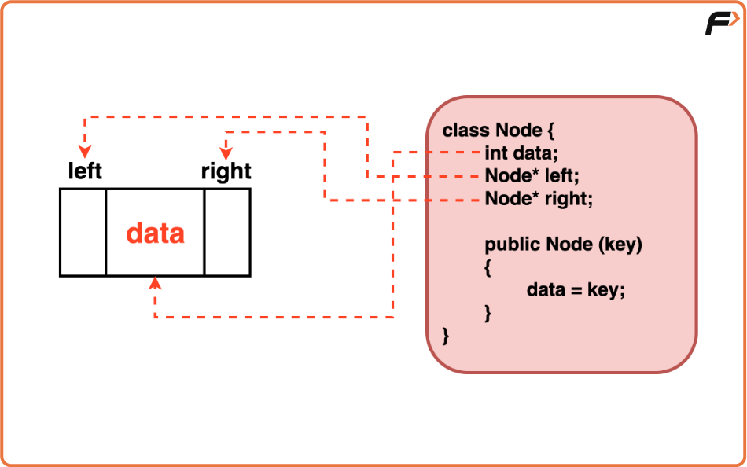
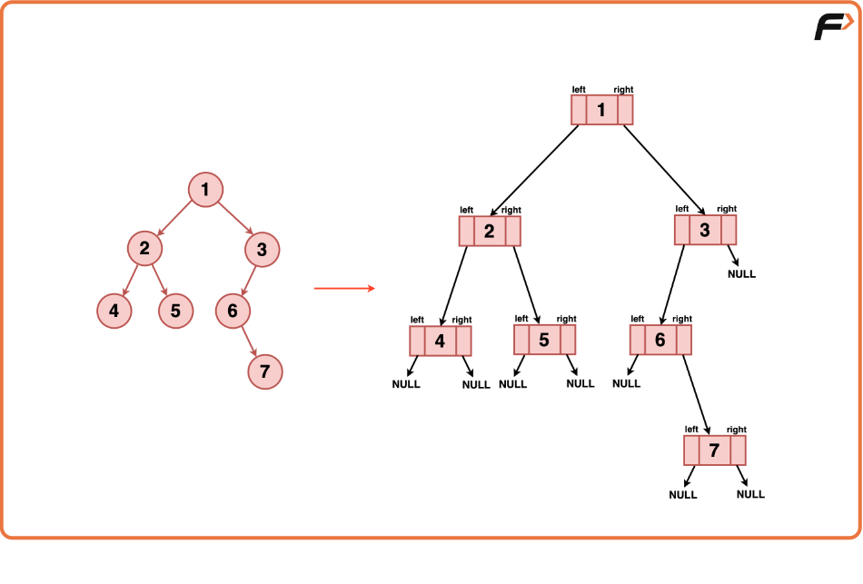
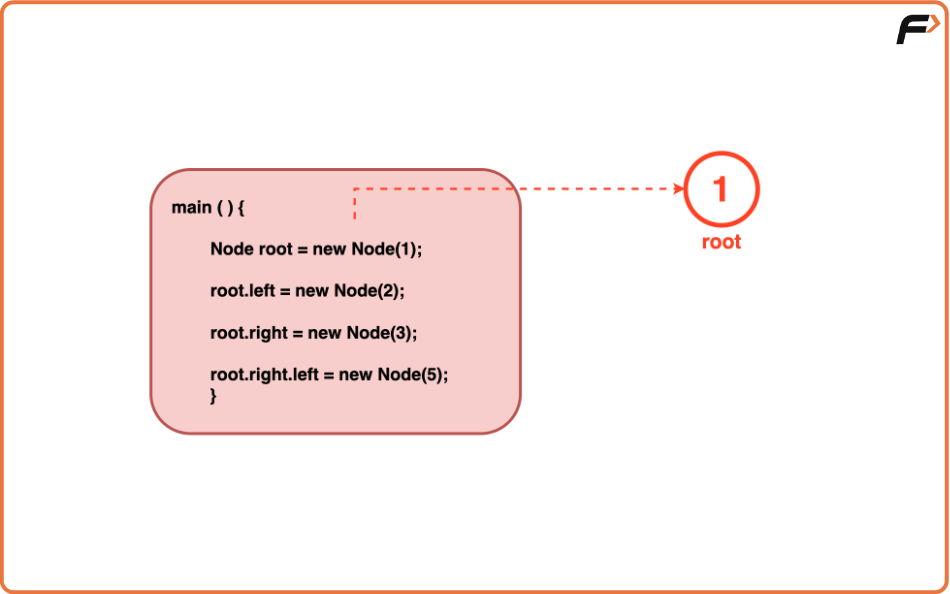
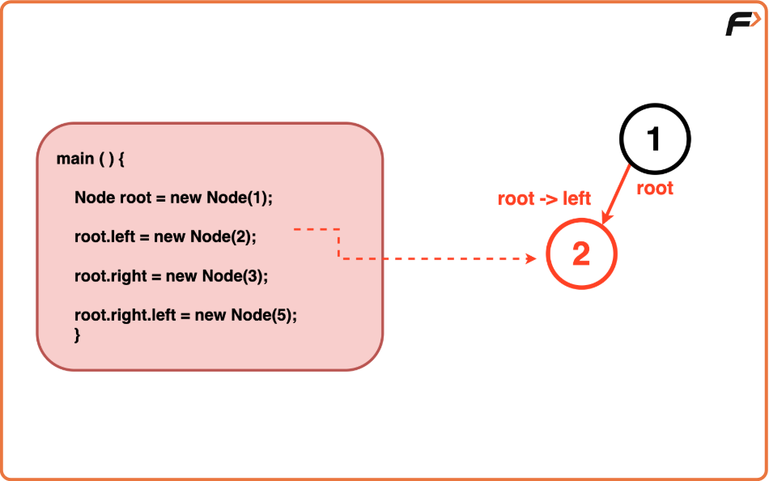
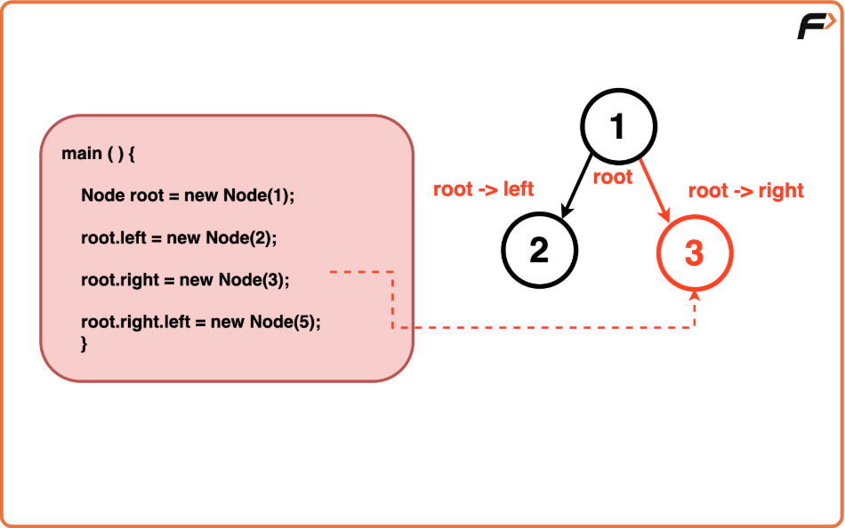
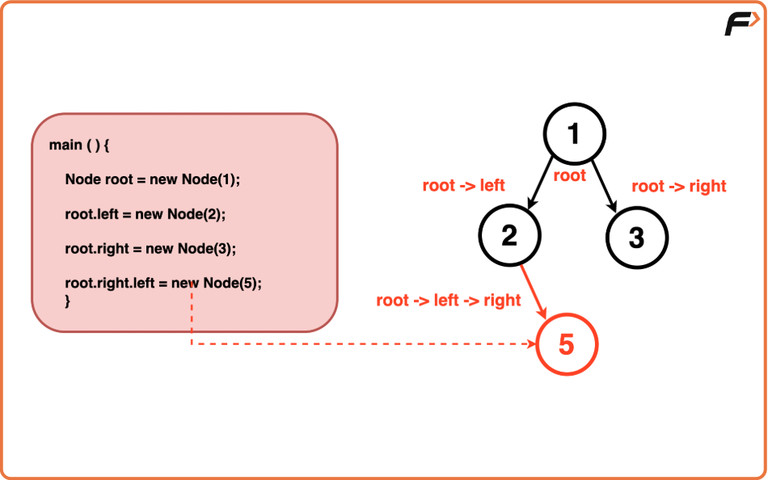
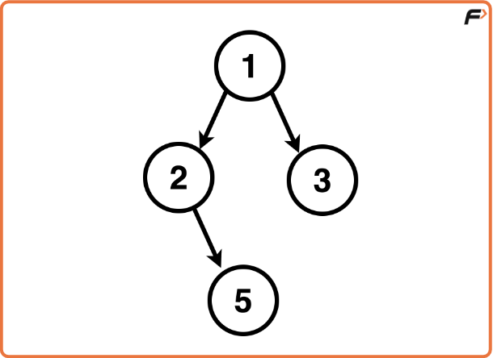

Binary Tree Representation in Java
In Java, a binary tree is structured using references to other nodes, forming a hierarchical arrangement where each node can refer to at most two other nodes: a left child and a right child.
This reference-based approach establishes connections between nodes, enabling traversal and navigation within the tree structure.

Node Structure:
In Java, a Binary Tree node is represented using a class that encapsulates the attributes of a node:
- Data Component: This holds the value of the node, which could be of any data type (e.g., integer, string, object).
- Pointers to Children: Two reference variables ie. ‘left’ and ‘right’ point to the left and right child nodes respectively. These references store the memory addresses of child nodes, allowing traversal and access to further nodes in the tree structure.
In Java, references to objects act similarly to pointers in C++, allowing nodes to refer to other nodes without direct memory manipulation.

Node Constructor:
In Java, the constructor of the Node class initialises a node with a specific value and sets its left and right references to null to signify that it doesn't have any children initially.
Within the constructor:
- data = val; :Sets the data of the node to the provided value (val). This assigns the input integer to the node's data.
- left = right = NULL; : Initialises both left and right references as null. This initialization ensures that when a node is created, it does not have any immediate connections to other nodes, indicating the absence of left and right children.
Node Connection:
Java utilises references between nodes allowing them to refer to other nodes. When creating a new node, memory is allocated for the node object, and the node’s data is stored within it.
References (`left` and `right`) are initialised as `null` to indicate that the node doesn’t currently have any children, The nodes are connected by assigning references of a parent node to its respective left and right child nodes.




import java.util.*;
// Class representing a Node in the Binary Tree
class Node {
int data; // Stores the value of the node
Node left; // Reference to the left child node
Node right; // Reference to the right child node
// Constructor to initialize a node with a given key
public Node(int key) {
data = key;
left = null;
right = null;
}
}
// Class containing the logic for Binary Tree creation
class Solution {
public Node createBinaryTree() {
// Creates the root node with key value 1
Node root = new Node(1);
// Creates a left child node for the root with key value 2
root.left = new Node(2);
// Creates a right child node for the root with key value 3
root.right = new Node(3);
// Creates a left child node for the right child of root with key value 5
root.right.left = new Node(5);
return root;
}
}
// Driver class
public class Main {
public static void main(String[] args) {
Solution solution = new Solution();
Node root = solution.createBinaryTree();
// Tree created, can be used for further operations
}
}
